C语言程序设计
Table of Contents
- 1. C语言的历史
- 2. C语言的特点
- 3. C的基本概念
- 3.1. C语言代码编译成机器代码的过程？
- 3.2. C语言的注释写法有哪些？
- 3.3. [Code] 能够呈现出基本概念的小程序 —— 计算箱子空间数量
- 3.4. [Code] 转换华氏度与摄氏度
- 3.5. [Code] 计算条形码（通用产品代码UPC）
- 3.6. 如何定义常量的名字
- 3.7. C语言的标识符
- 3.8. C语言有哪些关键字?
- 3.9. C语言是由记号组成的
- 3.10. 为什么C语言的符号那么简要？
- 3.11.
exit(0)与return 0的区别 - 3.12. 没有return的main函数也是可行的吗？
- 3.13. 编译器如何处理注释？
- 3.14. float类型名字的由来
- 3.15. C语言对标识符的长度限制
- 3.16. 什么叫做由实现定义的行为?
- 4. C的数据结构
- 5. C的表达式
- 6. C语言工具
- 7. 附录
1 C语言的历史
1.1 C语言的起源
1.2 C语言的标准化过程
2 C语言的特点
2.1 C语言的可移植性是基于哪个层面上的讨论？
C语言是在硬件上表现出移植性好。
3 C的基本概念
3.1 C语言代码编译成机器代码的过程？
3.2 C语言的注释写法有哪些？
3.3 [Code] 能够呈现出基本概念的小程序 —— 计算箱子空间数量
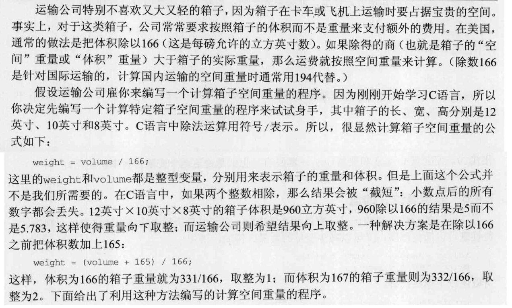
/* dweight2.c (Chapter 2, page 23) */
/* Computes the dimensional weight of a
box from input provided by the user */
#include <stdio.h>
int main(void)
{
int height, length, width, volume, weight;
printf("Enter height of box: ");
scanf("%d", &height);
printf("Enter length of box: ");
scanf("%d", &length);
printf("Enter width of box: ");
scanf("%d", &width);
volume = height * length * width;
weight = (volume + 165) / 166;
printf("Volume (cubic inches): %d\n", volume);
printf("Dimensional weight (pounds): %d\n", weight);
return 0;
}
3.4 [Code] 转换华氏度与摄氏度
/* celsius.c (Chapter 2, page 24) */
/* Converts a Fahrenheit temperature to Celsius */
#include <stdio.h>
#define FREEZING_PT 32.0f
#define SCALE_FACTOR (5.0f / 9.0f)
int main(void)
{
float fahrenheit, celsius;
printf("Enter Fahrenheit temperature: ");
scanf("%f", &fahrenheit);
celsius = (fahrenheit - FREEZING_PT) * SCALE_FACTOR;
printf("Celsius equivalent: %.1f\n", celsius);
return 0;
}
3.5 [Code] 计算条形码（通用产品代码UPC）
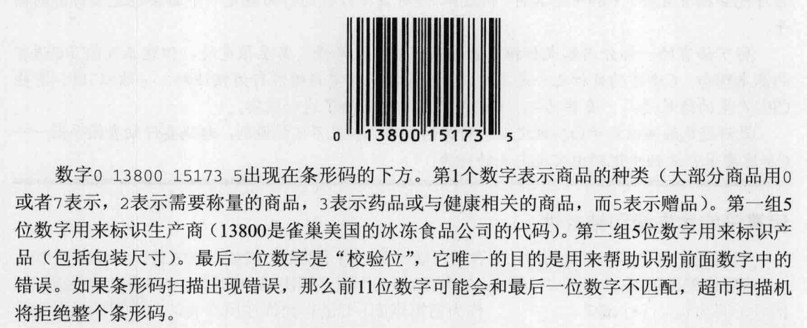
3.5.1 如何计算UPC的校验位？
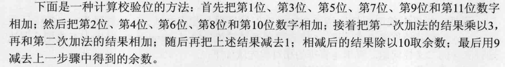
3.5.2 C语言实例
/* upc.c (Chapter 4, page 57) */
/* Computes a Universal Product Code check digit */
#include <stdio.h>
int main(void)
{
int d, i1, i2, i3, i4, i5, j1, j2, j3, j4, j5,
first_sum, second_sum, total;
printf("Enter the first (single) digit: ");
scanf("%1d", &d);
printf("Enter first group of five digits: ");
scanf("%1d%1d%1d%1d%1d", &i1, &i2, &i3, &i4, &i5);
printf("Enter second group of five digits: ");
scanf("%1d%1d%1d%1d%1d", &j1, &j2, &j3, &j4, &j5);
first_sum = d + i2 + i4 + j1 + j3 + j5;
second_sum = i1 + i3 + i5 + j2 + j4;
total = 3 * first_sum + second_sum;
printf("Check digit: %d\n", 9 - ((total - 1) % 10));
return 0;
}
3.6 如何定义常量的名字
定义常量有两种方法：① 使用 #define 宏， ② 使用 const 对变量进行修饰。
3.7 C语言的标识符
标识符 非数字(非数字 数字)* 详见附录 7.2 第一页
3.8 C语言有哪些关键字?
详见附录 7.2 第一页
3.9 C语言是由记号组成的
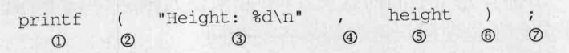 C语言记号的布局规则：
- 记号之间允许有多个空白字符（例如空白，换行符，tab符等）
3.10 为什么C语言的符号那么简要？
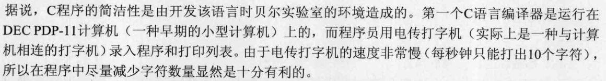
3.11 exit(0) 与 return 0 的区别
二者是等价的。
3.12 没有return的main函数也是可行的吗？
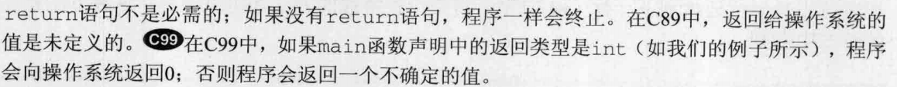
3.13 编译器如何处理注释？
在C99之前，编译器的处理方式不一样，有的完全删除，有的使用空格替换；在C99之后，标 准化了这种处理方式：使用空格替换。
3.14 float类型名字的由来
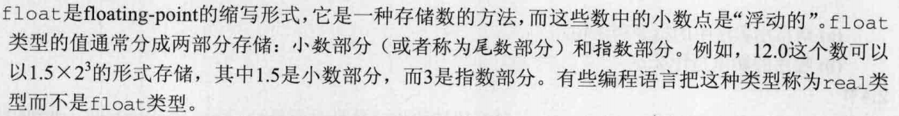
3.15 C语言对标识符的长度限制
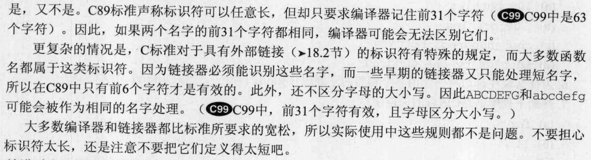
3.16 什么叫做由实现定义的行为?
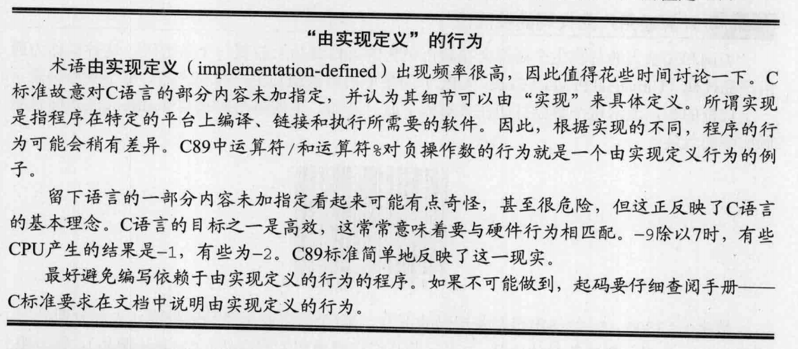
4 C的数据结构
4.1 变量
4.1.1 int·hello·=·'HELL'; 允许这样赋值吗?
在int表示为32位的机子上时,这是可以的,因为单引号表示单个字符,每个ASCII字符占用8位,刚 好4个字符都被占用了.(不过并不推荐这样使用)
4.2 数组
4.2.1 int·nums[5]·=·"abcde"; 允许这样赋值吗?
答案是不行,初始化应该遵循C语言的规则,int类型的数组初始化不能使用 char 类型的数
组初始化方式.
5 C的表达式
计算器不能让我们学会算术，只会使我们忘记算术。
表达式不同于语句，表达式会产生结果，可以与其他表达式结合一起使用。构造表达式的重 要部分是运算符；当然，含有返回值的函数也是可以构成表达式的。
5.1 运算符
5.1.1 算术运算符
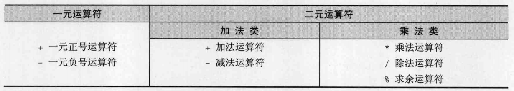
5.1.1.1 % 与 / 运算符的使用注意
- 当
/的操作数都是整数类型时 %运算符的操作数类型- 这两个运算符之间的操作数出现一个是0时
- 这两个运算符之间的操作数其中一个是负数时
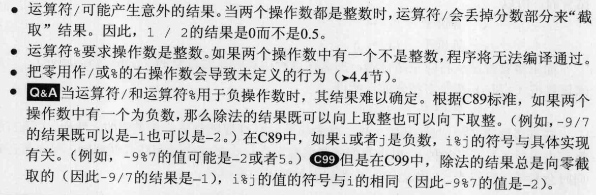
5.1.1.2 为什么C89与C99对于 % 为负数时规则那么复杂？
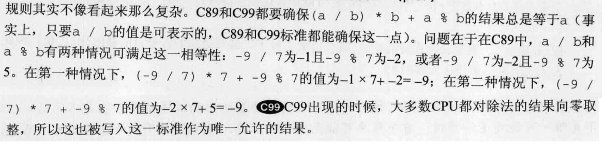
5.1.1.3 一元运算符 + 是什么时候被加上去的？
在C90标准，C语言加上一元运算符 + ，使得下面的表达式合法。
int he = +30;
5.1.1.4 如何对小数求余？
使用 fmod() 函数
5.1.1.5 求余运算符原理
当操作数都是整数时：
a - (a/b)*b // a%b
对于一般情况：
余数 = 被除数 - 商 × 除数
5.1.1.6 对运算结果的取整方向
C语言整形的除法的结果需要取整，例如5 / 3 = 1。C语言中的取整方式是向零取整。
取整风格共有3种：
- 向零取整。即向坐标轴0的方向，取最近的整数 (-1.2 == -1)。
- 向上取整。也就是向+∞取整，即取不小于结果的最小整数 (-1.2 == -2)。
- 向下取整。也就是向-∞取整，即取不大于结果的最大整数 (-1.2 == -1)。
所以，C语言中计算-5除以3，因为实数结果约为-1.67，向零取整，得到结果为-1。
5.1.1.7 求余与求模的区别
无论求余还是求模，都会进行如下计算：
- 求得商
c = a / b - 求模/求余
r = a - c * b
求模运算和求余运算在第一步不同: 求余 运算在取c的值时，向0 方向舍入( fix() 函数)；
而 求模 运算在计算c的值时，向无穷小方向舍入( floor() 函数)。
5.1.1.8 使用移位运算进行除法计算
关于除法，人们常常用向右移位的方式来快速计算一个数除以2的幂的结果，例如 16 / 4
= 4 就是把10000右移2位得到100，即4； 9 / 4 = 2 就是把1001右移2位得到2。事实
上，这种快速计算的方法，是一种向下取整的过程，所以它只适用于被除数为正数的情况。
若被除数为负数，这种右移的快速计算方式就是错误的了。
5.1.2 赋值运算符
5.1.2.1 不要交换复合运算符两个字符的位置
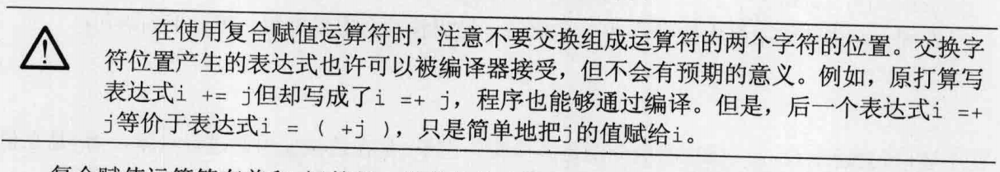
5.1.2.2 为什么说当 v 有副作用时， v+=e 不等于 v = v + e ?
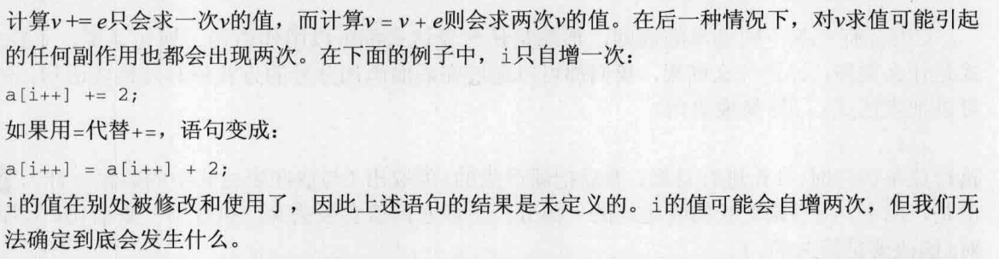
5.1.3 自增和自减
5.1.3.1 为什么C语言提供了 ++ 和 -- 运算符？
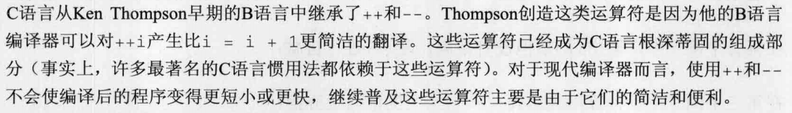
5.1.3.2 何时执行后缀形式的 ++ 和 -- 运算符？
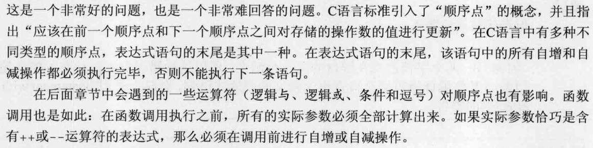
5.2 副作用
运算符做了一个除了返回值以外的另一件事，比如修改数据内容，在标准输出输出值等，这些动作被成为运算符的副作用。同理，并非单纯返回数值的函数也叫做含副作用的函数。 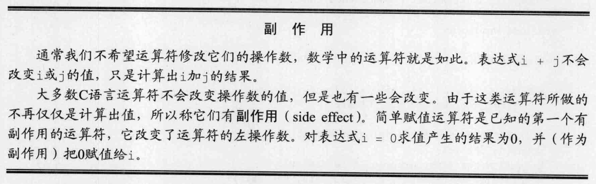
5.3 左值与右值
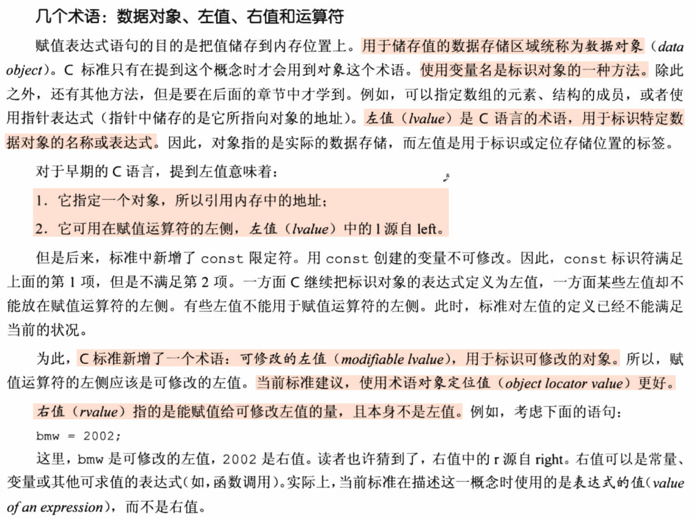
5.4 类型系统与运算符
在具有类型系统的编程语言中，运算符也是具有返回类型的。其返回类型与操作数有关。
5.4.1 算术运算符与类型系统
算术运算符返回的类型：对于整型，加减乘除求余的操作数类型比 int还小时，返回int；否则返回操作数类型最大那个。
对于小数，算术运算符返回的类型由最大类型的操作数决定。
#include <stdio.h>
int main(int argc, char *argv[]){
short t1 = 12;
short t2 = 12;
printf("the sizeof(short) is %lu\n", sizeof(t1));
printf("the sizeof(t1 + t2) is %lu\n", sizeof(t1 + t2));
float t3 = 12.2;
float t4 = 12.5;
printf("the sizeof(float) is %lu\n",sizeof(float));
printf("the sizeof(double) is %lu\n",sizeof(double));
printf("the sizeof(t3 + t4 is) %lu\n",sizeof(t3+t4));
}
// output
// the sizeof(short) is 2
// the sizeof(t1 + t2) is 4
// the sizeof(float) is 4
// the sizeof(double) is 8
// the sizeof(t3 + t4 is) 4
5.4.2 赋值运算符与类型系统
赋值运算符返回值的类型总是左值的类型。
5.5 [Warn] 不要同时对操作数进行访问和修改
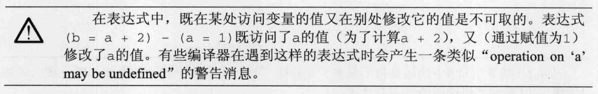
5.6 语句与表达式
任何一个表达式都是一条语句，只需在后面加上一个分号 ; 。
5.7 C语言的顺序点
指程序执行过程中修改变量值的最晚时刻。
C语言一般只有如下顺序点
- 每个完整表达式结束后，即分号(
;)后面 &&，||，三木运算符（?:），以及逗号表达式(,) 的每一个运算对象计算之后- 函数 调用中对所有实际参数的求值完成之后（进入函数体之前）
对于具有副作用的运算符，应该在前一个顺序点到下一个顺序点之前对存储的操作数的值进行更新。
6 C语言工具
6.1 GCC错误选项
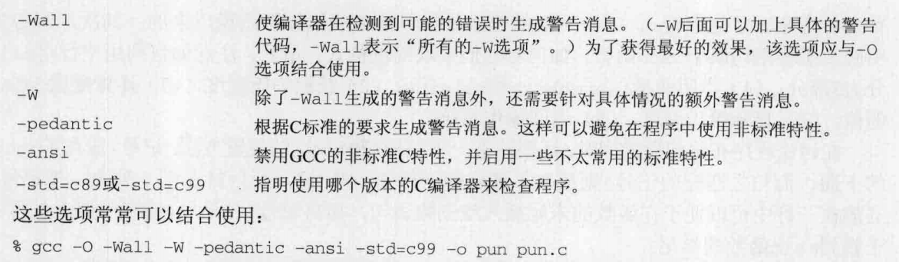